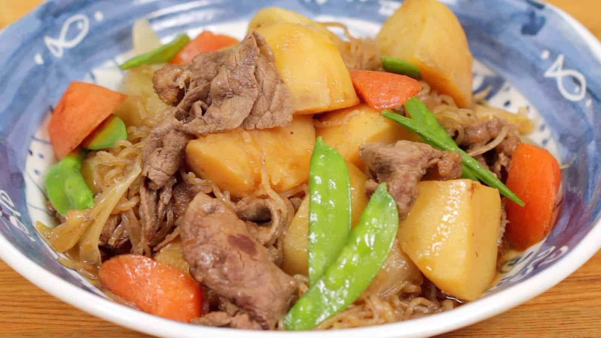

Nikujaga

How to Cook
Ingredients
Serving 4
- 1 large onion
- 1 carrot
- 3 gold potatoes
- 8 pieces snow peas (or substitute with green beans or green peas)
- 200g shirataki noodles
- 1/2 lb thinly sliced beef (chuck or ribeye)
- (If opting for vegetarian option, you can substitute with shiitake, king oyster, or portobello mushrooms)
- 1 tbsp vegetable oil
For seasonings
- 2 cups dashi
- 4 tbsp mirin
- 4 tbsp soy sauce
- 2 tbsp sake
- 1 tbsp sugar
Instructions
Prepare ingredients
- Cut onion in half, and each half into 1/2 inch wedges.
- Peel carrot and cut it into 1 inch pieces.
-
Cut potatoes into quarters. Remove the sharp edges of them with a knife to create smooth corners.
This prevents them from breaking into pieces.
Soak the potatoes in water to remove starch.
- Remove strings from all snow peas.
- Bring a small pot of water to boil. Add a pinch of salt and snow peas.
- Blanch them in the boiling water for 1 minute and take them out. Keep water boiling.
-
Drain shirataki noodles and cut them roughly in half. Blanch the noodles in the boiling water for 1 minute.
This removes excess odor from the noodles.T ake the noodles out and drain them well.
- Cut the thinly-sliced beef in half or thirds, depend on size.
Let's cook nikujaga!
- Preheat a large pot on medium heat. Add oil and onion to saute.
- When the onion wedges are coated with oil, add thinly-sliced beef and cook until there is no pink color.
- Add potatoes and coat them well with the liquids from other ingredients. This helps keep potatoes from breaking.
- Add carrots and shirataki noodles. Mix everything together.
- Add dashi. Make sure there is enough liquid to almost coveringredients. Add water if the liquid is not enough.
- Cover with a lid and continue to cook. Once boiling, skim the scum and foam from the surface.
- Add mirin, soy sauce, sake, and sugar. Mix everything together and place a drop lid on top.
-
Simmer on low heat for 12 to 13 minutes, or until a skewer pieces potatoes easily.
Do not mix ingredients while cooking as the drop lid will help distribute the cooking liquid and flavors.
- Turn off the heat once cooked and remove the drop lid.
If possible, let nikujaga rest uncovered for 30 to 60 minutes before serving. This helps the flavor soaking into the ingredients.
- Before serving, add snow peas to the pot and cover to reheat on medium heat. Reduce the heat and let it simmer for a few minutes.
- Serve nikujaga with some cooking liquid, and enjoy!